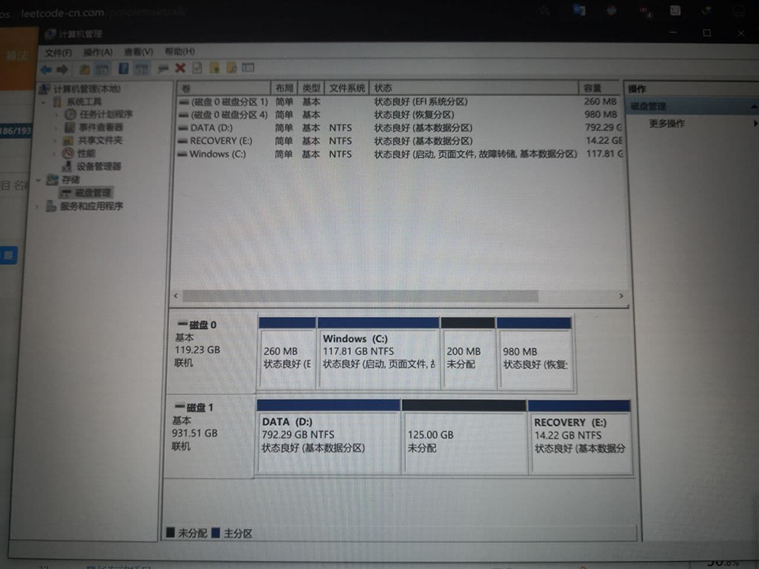
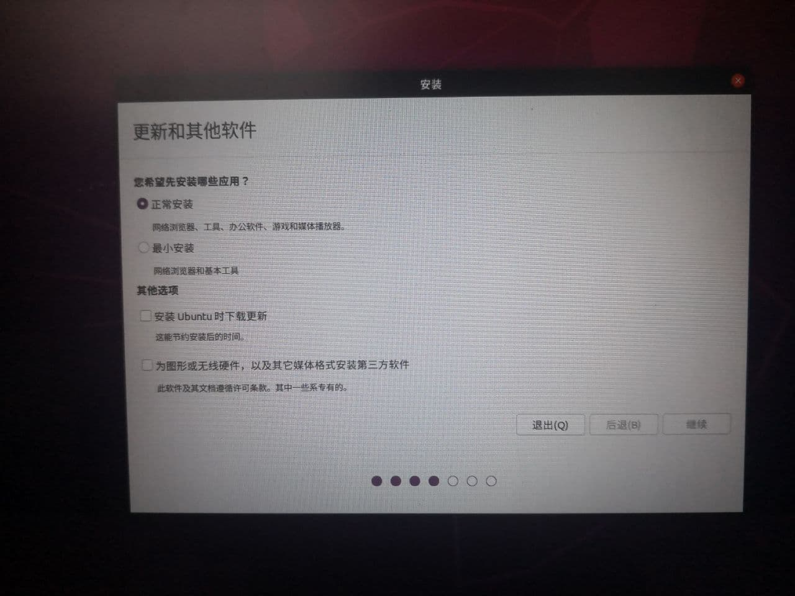
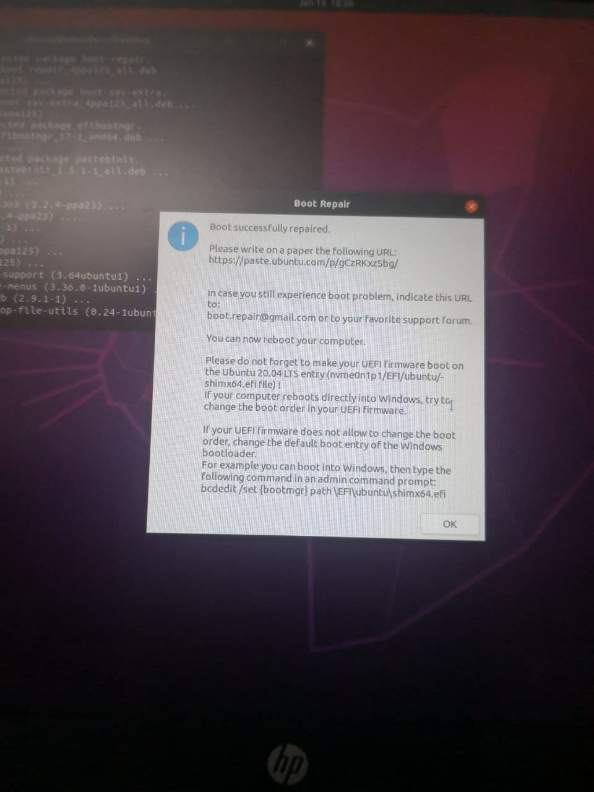
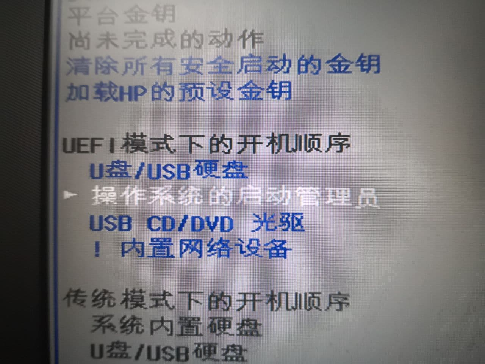

<!DOCTYPE html>


<html lang="zh-CN">


<head>
  <meta charset="utf-8" />
    
  <meta name="viewport" content="width=device-width, initial-scale=1, maximum-scale=1" />
  <title>
    记一次几乎踩了所有坑的Ubuntu双系统安装 |  Starman&#39;s Corner
  </title>
  <meta name="generator" content="hexo-theme-ayer">
  
  <link rel="shortcut icon" href="/favicon.ico" />
  
  
<link rel="stylesheet" href="/dist/main.css">

  
<link rel="stylesheet" href="https://cdn.jsdelivr.net/gh/Shen-Yu/cdn/css/remixicon.min.css">

  
<link rel="stylesheet" href="/css/custom.css">

  
  
<script src="https://cdn.jsdelivr.net/npm/pace-js@1.0.2/pace.min.js"></script>

  
  

  

<link rel="alternate" href="/atom.xml" title="Starman's Corner" type="application/atom+xml">
</head>

</html>

<body>
  <div id="app">
    
      
    <main class="content on">
      <section class="outer">
  <article
  id="post-记一次几乎踩了所有坑的Ubuntu双系统安装"
  class="article article-type-post"
  itemscope
  itemprop="blogPost"
  data-scroll-reveal
>
  <div class="article-inner">
    
    <header class="article-header">
       
<h1 class="article-title sea-center" style="border-left:0" itemprop="name">
  记一次几乎踩了所有坑的Ubuntu双系统安装
</h1>
 

    </header>
     
    <div class="article-meta">
      <a href="/2021/01/15/%E8%AE%B0%E4%B8%80%E6%AC%A1%E5%87%A0%E4%B9%8E%E8%B8%A9%E4%BA%86%E6%89%80%E6%9C%89%E5%9D%91%E7%9A%84Ubuntu%E5%8F%8C%E7%B3%BB%E7%BB%9F%E5%AE%89%E8%A3%85/" class="article-date">
  <time datetime="2021-01-14T17:20:37.000Z" itemprop="datePublished">2021-01-15</time>
</a>   
<div class="word_count">
    <span class="post-time">
        <span class="post-meta-item-icon">
            <i class="ri-quill-pen-line"></i>
            <span class="post-meta-item-text"> 字数统计:</span>
            <span class="post-count">3k</span>
        </span>
    </span>

    <span class="post-time">
        &nbsp; | &nbsp;
        <span class="post-meta-item-icon">
            <i class="ri-book-open-line"></i>
            <span class="post-meta-item-text"> 阅读时长≈</span>
            <span class="post-count">11 分钟</span>
        </span>
    </span>
</div>
 
    </div>
      
    <div class="tocbot"></div>


  
    <div class="article-entry" itemprop="articleBody">
       
  <h1 id="前言"><a href="#前言" class="headerlink" title="前言"></a>前言</h1><p>我的破本本用虚拟机跑Linux实在是顶不住，于是我昨天晚上一时兴起，想要给笔记本装 Windows 10 + Ubuntu 20.04 LTS 双系统。我的笔记本是UEFI引导，128GB SSD + 1TB机械硬盘，分区表格式都是GPT，Windows 10装在SSD上，计划在机械硬盘上分出128GB装Ubuntu（至于为什么才分这么点，显然是因为1T的硬盘几乎快被游戏填满了，逃）。</p>
<p>要么是我电脑的硬件兼容性太差，要么是我运气不佳，这次安装我居然步步踩坑，从昨天晚上折腾到今天晚上才把所有问题解决。<strong>这篇文章记录了我踩坑的全过程，仅供参考，切勿当作教程使用。</strong></p>
<a id="more"></a>

<h1 id="一、安装过程"><a href="#一、安装过程" class="headerlink" title="一、安装过程"></a>一、安装过程</h1><p>首先进行分区，我参考网上一篇教程，在SSD上划分出200M作为EFI引导分区，然后在机械硬盘上划分出128GiB空间作为Ubuntu主分区（注意：划分过程需要耐心等待，印象中花费了超过半个小时）。为了方便随后的安装过程中根据分区大小和位置找分区，我把分区结果拍了下来。</p>


<p>然后就可以使用U盘启动Ubuntu安装程序了：我从官网上下载了Ubuntu 20.04 LTS镜像，刻录到U盘当中。进UEFI BIOS（以下简称BIOS）把安全启动关闭，把U盘启动优先级调为最高，进入Ubuntu安装向导。</p>
<h2 id="坑1-安装向导卡住"><a href="#坑1-安装向导卡住" class="headerlink" title="坑1. 安装向导卡住"></a>坑1. 安装向导卡住</h2><p>此时，第一个坑来了。在选择”正常安装“和”最小安装“的界面，我点击继续后卡住不动了。</p>


<p>解决方法是：在进入安装向导之前的grub菜单处按e编辑启动选项，将<code>quiet splash ---</code>改为<code>quiet splash nomodeset</code>，即增加nomodeset启动选项。nomodeset的含义如下：</p>
<blockquote>
<p>The newest kernels have moved the video mode setting into the kernel.   So all the programming of the hardware specific clock rates and  registers on the video card happen in the kernel rather than in the X  driver when the X server starts.. This makes it possible to have high  resolution nice looking splash (boot) screens and flicker free  transitions from boot splash to login screen. Unfortunately, on some  cards this doesnt work properly and you end up with a <strong>black screen</strong>. Adding the nomodeset parameter instructs the kernel to not load video drivers and use BIOS modes instead until X is loaded. </p>
</blockquote>
<p>大意为，在新版的kernels当中，加载视频驱动的工作从原本的在加载图形化服务时进行，改为在加载kernel的时候就进行了，而部分显卡不兼容这一设定，可以用nomodeset选项改回原来的模式。</p>
<p>继续进行安装向导，安装方式选择“其他”，手动进行分区。我将128GiB的空间划分为swap、/和/home三个分区，其中swap分区的大小参照Ubuntu官网划分为11GB，剩下的按照1:3划分给/和/home。swap分区作为虚拟内存的一部分，Ubuntu官网的推荐值为：如果使用休眠功能，最小值不小于RAM，否则不小于sqrt(RAM)；其最大值不应超过RAM的两倍。此外，在分区界面，我将启动盘设置为SSD上分出来的那200M。分区完成，进行后续的设置后就完成安装了（由于还未设置代理，安装过程中我skip了需要下载的内容）。</p>
<h2 id="坑2-开机后直接进入Windows-10"><a href="#坑2-开机后直接进入Windows-10" class="headerlink" title="坑2. 开机后直接进入Windows 10"></a>坑2. 开机后直接进入Windows 10</h2><p>但是当我兴冲冲地重启电脑后发现：根本没有出现操作系统选择列表，开机后同原本一样直接进入Windows 10，第二个坑来了。</p>
<p>在Windows 10自带的磁盘管理页面中，我能看到机械硬盘上128GiB的空间被划为三个部分，同时SSD上那200M由空闲状态变为EFI系统文件状态，因此分区没有问题。会不会是引导的问题？我使用启动盘中的Try Ubuntu功能进入Ubuntu试用版，使用以下指令安装并运行了引导修复工具：</p>
<figure class="highlight sh"><table><tr><td class="gutter"><pre><span class="line">1</span><br><span class="line">2</span><br><span class="line">3</span><br></pre></td><td class="code"><pre><span class="line">sudo add-apt-repository ppa:yannubuntu/boot-repair -y</span><br><span class="line">sudo apt-get update</span><br><span class="line">sudo apt-get install boot-repair -y</span><br></pre></td></tr></table></figure>
<p>修复完成后弹出以下窗口：</p>


<p>按照第一句话，我应该将在BIOS当中把Ubuntu引导文件加入到启动项当中，但是我的BIOS并没有添加自定义启动项的功能。按照第二句话，我应该把Ubuntu启动项设置到Windows前面，但是我并没有在BIOS的启动选项当中看到Ubuntu和Windows，只有一个笼统的“操作系统的启动管理员”。因此我按照第三句话，在Windows命令行中将启动路径设置为Ubuntu的引导文件，没有效果。</p>
<p>我翻遍了BIOS，尝试了包括清除安全启动key和设置密码之内的多种方法都没有找到添加启动项的地方，正当我不知道应该如何继续时，我发现了启动项“操作系统的启动管理员”左边的小箭头。。。原来这个选项是可以细分的，按Enter果然弹出了Windows和Ubuntu两个启动项。这可能是我整个安装过程中犯过的最蠢的错误：对自己电脑的BIOS操作不熟悉。我将Ubuntu启动项设置到Windows前面之后，果然不再进入Windows了，第二个坑解决。</p>


<h2 id="坑3-开机后进入grub命令行"><a href="#坑3-开机后进入grub命令行" class="headerlink" title="坑3. 开机后进入grub命令行"></a>坑3. 开机后进入grub命令行</h2><p>第二个坑一解决，第三个坑随之而来：开机后进入的是grub命令行界面而不是grub菜单界面。我依然怀疑是引导出了问题，因此插入U盘，选择擦除旧系统再安装Ubuntu的选项重装系统。由于对引导缺乏认识，我也不清楚之前的引导是否正确安装，因此这次我选择让安装程序自动擦除旧系统后自动分区并安装。结果还是一样，依旧是开机后进入grub命令行。此时我再次查看Windows 10的磁盘管理，发现swap、/、/home的分区大小几乎没有改变，但是在机械硬盘上增加了一个EFI引导分区，且SSD上原来分配的200M也还在。</p>
<p>在grub命令行输入以下指令进入grub菜单：</p>
<figure class="highlight shell"><table><tr><td class="gutter"><pre><span class="line">1</span><br><span class="line">2</span><br><span class="line">3</span><br><span class="line">4</span><br><span class="line">5</span><br><span class="line">6</span><br><span class="line">7</span><br></pre></td><td class="code"><pre><span class="line">ls</span><br><span class="line"><span class="meta">#</span><span class="bash"> 此时会显示磁盘列表</span></span><br><span class="line">ls 磁盘编号/boot/grub # 对所有磁盘编号尝试此指令，直至提示找到文件</span><br><span class="line">set root=找到文件的磁盘编号</span><br><span class="line">set prefix=找到文件的磁盘编号/boot/grub</span><br><span class="line">insmod normal</span><br><span class="line">normal</span><br></pre></td></tr></table></figure>
<p>此时终于能进入grub菜单，选择Ubuntu系统。</p>
<h2 id="坑4-Ubuntu系统只有鼠标"><a href="#坑4-Ubuntu系统只有鼠标" class="headerlink" title="坑4. Ubuntu系统只有鼠标"></a>坑4. Ubuntu系统只有鼠标</h2><p>紧接着第四个坑又来了：Ubuntu系统进入后，只有鼠标和背景，没有图标，无法进行任何操作。</p>
<p>经过尝试，解决方法是使用安全模式进入Ubuntu，修改/etc/default/grub文件中的<code>quiet splash</code>改为<code>quiet splash nomodeset</code>，然后执行<code>sudo update-grub</code>指令更新grub。居然还是同样的问题，只不过这个指令如果在grub菜单中按e修改是一次性的，只有修改/etc/default/grub文件才能永久生效。</p>
<p>踩完了四个坑，终于能正常进入Ubuntu了。不过，一进入系统，我就明显感觉屏幕非常暗。尝试笔记本的亮度调节功能键，无效；进入Ubuntu设置，居然找不到调节亮度的地方！我决定先配置代理，能够浏览Google之后再来解决亮度的问题。</p>
<p>顺利进入Ubuntu后，我使用<code>df -lh</code>和<code>fdisk -l</code>指令查看分区情况，发现/boot/efi被挂载在Windows 10的EFI引导分区上。此时，SSD上我划分出来的200M是闲置的，于是我使用Windows 10的DiskGenius软件将200M合并回Windows 10的C盘。至此，Ubuntu系统可以算是顺利安装完成。</p>
<h1 id="二、配置代理"><a href="#二、配置代理" class="headerlink" title="二、配置代理"></a>二、配置代理</h1><p>我使用的代理工具是Clash。从Github仓库下载Clash的Release版本，解压后获得可执行文件。我存放在/opt/clash文件夹当中。第一次运行Clash会自动生成配置文件config.yaml和IP库文件Country.mmdb，文件存放路径为<code>~/.config/clash</code>。我将自己的config.yaml和Country.mmdb覆盖<code>~/.config/clash</code>目录中的文件，Clash即可正常运行。可在浏览器中输入clash.razord.top进入Clash的Web界面。</p>
<h2 id="1-GNOME代理"><a href="#1-GNOME代理" class="headerlink" title="1. GNOME代理"></a>1. GNOME代理</h2><p>进入系统设置-网络-网络代理，模式设置为手动，填入相应的IP和端口号即可。此时，Firefox可以访问Google。</p>
<h2 id="2-终端代理和开机启动"><a href="#2-终端代理和开机启动" class="headerlink" title="2. 终端代理和开机启动"></a>2. 终端代理和开机启动</h2><p>在系统设置当中配置代理只能让GNOME应用使用，而终端程序还要单独配置。配置方法十分简单，只需设置两个环境变量：</p>
<figure class="highlight shell"><table><tr><td class="gutter"><pre><span class="line">1</span><br><span class="line">2</span><br></pre></td><td class="code"><pre><span class="line">export http_proxy=http://127.0.0.1:7890</span><br><span class="line">export https_proxy=http://127.0.0.1:7890</span><br></pre></td></tr></table></figure>
<p>此时在非root账户当中可以使用<code>wget google.com</code>指令获取谷歌主页，然而在root账户中还不行，因为进入root账户时默认不会保存环境变量的值，解决方法是在/etc/sudoers中加入：</p>
<figure class="highlight bash"><table><tr><td class="gutter"><pre><span class="line">1</span><br></pre></td><td class="code"><pre><span class="line">Defaults env_keep += <span class="string">&quot;http_proxy https_proxy no_proxy&quot;</span></span><br></pre></td></tr></table></figure>
<p>再来配置开机启动，开机启动首先需要以下shell脚本：</p>
<figure class="highlight shell"><table><tr><td class="gutter"><pre><span class="line">1</span><br><span class="line">2</span><br><span class="line">3</span><br><span class="line">4</span><br><span class="line">5</span><br></pre></td><td class="code"><pre><span class="line"><span class="meta">#</span><span class="bash">!/bin/bash</span></span><br><span class="line">gsettings set org.gnome.system.proxy mode &#x27;manual&#x27; # ubuntu网络模式配置为手动</span><br><span class="line">cd /opt/clash  # 切换到Clash的目录</span><br><span class="line">./clash -d /opt/clash &amp;  # 在后台执行clash客户端</span><br><span class="line">echo &quot;Clash started!&quot;  # 启动成功的提示</span><br></pre></td></tr></table></figure>
<p>-d后面的路径设置为存放config.yaml和Country.mmdb的路径，&amp;表示后台运行。</p>
<p>将上述脚本连同设置两个环境变量的指令一同添加到~/.profile文件当中，即可实现登陆当前账户时自动运行Clash并设置系统代理。由于/etc/sudoers文件也进行了修改，root账户也能够走代理。</p>
<h1 id="三、无法设置亮度"><a href="#三、无法设置亮度" class="headerlink" title="三、无法设置亮度"></a>三、无法设置亮度</h1><p>再回过头来解决亮度的问题，我先后尝试过以下几种方法：</p>
<h2 id="1-修改grub"><a href="#1-修改grub" class="headerlink" title="1. 修改grub"></a>1. 修改grub</h2><p>在/etc/default/grub中设置以下参数并更新grub：</p>
<figure class="highlight shell"><table><tr><td class="gutter"><pre><span class="line">1</span><br></pre></td><td class="code"><pre><span class="line">GRUB_CMDLINE_LINUX=&quot;acpi_backlight=vendor&quot;</span><br></pre></td></tr></table></figure>
<p>失败。</p>
<h2 id="2-使用亮度调节工具"><a href="#2-使用亮度调节工具" class="headerlink" title="2. 使用亮度调节工具"></a>2. 使用亮度调节工具</h2><p>我先后尝试了brightness-controller和brightness-controller-simple两款工具，均失败。</p>
<h2 id="3-修改亮度文件"><a href="#3-修改亮度文件" class="headerlink" title="3. 修改亮度文件"></a>3. 修改亮度文件</h2><p>与亮度有关的文件存放在/sys/class/backlight文件夹中，然而，我的这个文件夹是空的，该方法失败。</p>
<h2 id="4-更新驱动"><a href="#4-更新驱动" class="headerlink" title="4. 更新驱动"></a>4. 更新驱动</h2><p>一开始我使用这条指令更新驱动：</p>
<figure class="highlight shell"><table><tr><td class="gutter"><pre><span class="line">1</span><br></pre></td><td class="code"><pre><span class="line">sudo ubuntu-drivers autoinstall</span><br></pre></td></tr></table></figure>
<p>然而不仅没有效果，因为这条指令为我安装了新版本的内核，使系统多内核共存，我还无法进入系统。我只能手动选择内核版本，设置为旧版系统启动，然后删除新版本。几个小时后，我阴差阳错地在“应用-软件和更新-附加驱动“当中看到了Nvidia显卡的驱动选择列表。默认选择的是开源驱动，我将其改为最新版的专用的、tested的驱动。</p>
<p>驱动更新后，重启电脑，居然又进不去系统了，提示”unable to bind the codec”。解决方法为：将/etc/default/grub文件中的quite、slash、nomodeset三个参数都删除。quiet splash的含义如下：</p>
<blockquote>
<p>The splash (which eventually ends up in your /boot/grub/grub.cfg ) causes the splash screen to be shown.</p>
<p>At the same time you want the boot process to be quiet, as otherwise all kinds of messages would disrupt that splash screen.</p>
<p>Although specified in GRUB these are kernel parameters influencing the loading of the kernel or its modules, not something that changes GRUB  behaviour. The significant part from GRUB_CMDLINE_LINUX_DEFAULT is CMDLINE_LINUX.</p>
</blockquote>
<p>光看说明我也不太明白，不过三个参数均删除之后确实可以进入系统，而且由于更新了驱动，亮度调节的滑块也出现了。Fn功能键也能正常调节亮度。</p>
<h1 id="四、扬声器无声"><a href="#四、扬声器无声" class="headerlink" title="四、扬声器无声"></a>四、扬声器无声</h1><p>我写这篇博客写到一半时，突然想听歌，于是又发现了另外一个问题：扬声器之前有声音的，现在没有了。好家伙，连写博客都不能让我好好写。我运行自带的alsamixer工具发现，Headphone音量被设置为0，只需设置成100即可恢复正常。我怀疑是显卡驱动更新的时候更改的。</p>
<h1 id="五、总结"><a href="#五、总结" class="headerlink" title="五、总结"></a>五、总结</h1><p>这次安装踩的坑是真的多，不过我的第一反应是想用这篇博客记录下这个过程，而不是放弃。可能，这就是Linux的魅力吧。</p>
<p>生命不止，折腾不息。</p>
 
      <!-- reward -->
      
    </div>
    

    <!-- copyright -->
    
    <div class="declare">
      <ul class="post-copyright">
        <li>
          <i class="ri-copyright-line"></i>
          <strong>版权声明： </strong>
          
          本博客所有文章除特别声明外，著作权归作者所有。转载请注明出处！
          
        </li>
      </ul>
    </div>
    
    <footer class="article-footer">
       
<div class="share-btn">
      <span class="share-sns share-outer">
        <i class="ri-share-forward-line"></i>
        分享
      </span>
      <div class="share-wrap">
        <i class="arrow"></i>
        <div class="share-icons">
          
          <a class="weibo share-sns" href="javascript:;" data-type="weibo">
            <i class="ri-weibo-fill"></i>
          </a>
          <a class="weixin share-sns wxFab" href="javascript:;" data-type="weixin">
            <i class="ri-wechat-fill"></i>
          </a>
          <a class="qq share-sns" href="javascript:;" data-type="qq">
            <i class="ri-qq-fill"></i>
          </a>
          <a class="douban share-sns" href="javascript:;" data-type="douban">
            <i class="ri-douban-line"></i>
          </a>
          <!-- <a class="qzone share-sns" href="javascript:;" data-type="qzone">
            <i class="icon icon-qzone"></i>
          </a> -->
          
          <a class="facebook share-sns" href="javascript:;" data-type="facebook">
            <i class="ri-facebook-circle-fill"></i>
          </a>
          <a class="twitter share-sns" href="javascript:;" data-type="twitter">
            <i class="ri-twitter-fill"></i>
          </a>
          <a class="google share-sns" href="javascript:;" data-type="google">
            <i class="ri-google-fill"></i>
          </a>
        </div>
      </div>
</div>

<div class="wx-share-modal">
    <a class="modal-close" href="javascript:;"><i class="ri-close-circle-line"></i></a>
    <p>扫一扫，分享到微信</p>
    <div class="wx-qrcode">
      
    </div>
</div>

<div id="share-mask"></div>  
  <ul class="article-tag-list" itemprop="keywords"><li class="article-tag-list-item"><a class="article-tag-list-link" href="/tags/Linux/" rel="tag">Linux</a></li></ul>

    </footer>
  </div>

   
  <nav class="article-nav">
    
    
      <a href="/2021/01/01/%E4%B8%A4%E9%81%93%E6%B1%82%E6%9C%80%E5%A4%A7%E9%9D%A2%E7%A7%AF%E7%9A%84%E9%A2%98%E7%9B%AE%E5%9C%A8%E8%A7%A3%E6%B3%95%E4%B8%8A%E7%9A%84%E4%B8%8D%E5%90%8C/" class="article-nav-link">
        <strong class="article-nav-caption">下一篇</strong>
        <div class="article-nav-title">两道求最大面积的题目在解法上的不同</div>
      </a>
    
  </nav>

  
   
<div class="gitalk" id="gitalk-container"></div>

<link rel="stylesheet" href="https://cdn.jsdelivr.net/npm/gitalk@1.6.2/dist/gitalk.css">


<script src="https://cdn.jsdelivr.net/npm/gitalk@1.6.2/dist/gitalk.min.js"></script>


<script src="https://cdn.jsdelivr.net/npm/blueimp-md5@2.10.0/js/md5.min.js"></script>

<script type="text/javascript">
  var gitalk = new Gitalk({
    clientID: '363970481e5646ccc903',
    clientSecret: '204c86a986af07700a85811abf572b872bafd152',
    repo: 'blog_gitalk_storage',
    owner: 'Starman-SWA',
    admin: ['Starman-SWA'],
    // id: location.pathname,      // Ensure uniqueness and length less than 50
    id: md5(location.pathname),
    distractionFreeMode: false,  // Facebook-like distraction free mode
    pagerDirection: 'last'
  })

  gitalk.render('gitalk-container')
</script>

     
</article>

</section>
      <footer class="footer">
  <div class="outer">
    <ul>
      <li>
        Copyrights &copy;
        2020-2021
        <i class="ri-heart-fill heart_icon"></i> Starman
      </li>
    </ul>
    <ul>
      <li>
        
        
        
        由 <a href="https://hexo.io" target="_blank">Hexo</a> 强力驱动
        <span class="division">|</span>
        主题 - <a href="https://github.com/Shen-Yu/hexo-theme-ayer" target="_blank">Ayer</a>
        
      </li>
    </ul>
    <ul>
      <li>
        
        
        <span>
  <span><i class="ri-user-3-fill"></i>访问人数:<span id="busuanzi_value_site_uv"></span></s>
  <span class="division">|</span>
  <span><i class="ri-eye-fill"></i>浏览次数:<span id="busuanzi_value_page_pv"></span></span>
</span>
        
      </li>
    </ul>
    <ul>
      
    </ul>
    <ul>
      
    </ul>
    <ul>
      <li>
        <!-- cnzz统计 -->
        
      </li>
    </ul>
  </div>
</footer>
      <div class="float_btns">
        <div class="totop" id="totop">
  <i class="ri-arrow-up-line"></i>
</div>

      </div>
    </main>
    <aside class="sidebar on">
      <button class="navbar-toggle"></button>
<nav class="navbar">
  
  <div class="logo">
    <a href="/"></a>
  </div>
  
  <ul class="nav nav-main">
    
    <li class="nav-item">
      <a class="nav-item-link" href="/">主页</a>
    </li>
    
    <li class="nav-item">
      <a class="nav-item-link" href="/archives">归档</a>
    </li>
    
    <li class="nav-item">
      <a class="nav-item-link" href="/tags">标签</a>
    </li>
    
    <li class="nav-item">
      <a class="nav-item-link" href="/About">关于我</a>
    </li>
    
  </ul>
</nav>
<nav class="navbar navbar-bottom">
  <ul class="nav">
    <li class="nav-item">
      
      <a class="nav-item-link nav-item-search"  title="搜索">
        <i class="ri-search-line"></i>
      </a>
      
      
      <a class="nav-item-link" target="_blank" href="/atom.xml" title="RSS Feed">
        <i class="ri-rss-line"></i>
      </a>
      
    </li>
  </ul>
</nav>
<div class="search-form-wrap">
  <div class="local-search local-search-plugin">
  <input type="search" id="local-search-input" class="local-search-input" placeholder="Search...">
  <div id="local-search-result" class="local-search-result"></div>
</div>
</div>
    </aside>
    <script>
      if (window.matchMedia("(max-width: 768px)").matches) {
        document.querySelector('.content').classList.remove('on');
        document.querySelector('.sidebar').classList.remove('on');
      }
    </script>
    <div id="mask"></div>

<!-- #reward -->
<div id="reward">
  <span class="close"><i class="ri-close-line"></i></span>
  <p class="reward-p"><i class="ri-cup-line"></i>请我喝杯咖啡吧~</p>
  <div class="reward-box">
    
    <div class="reward-item">
      
      <span class="reward-type">支付宝</span>
    </div>
    
    
    <div class="reward-item">
      
      <span class="reward-type">微信</span>
    </div>
    
  </div>
</div>
    
<script src="/js/jquery-2.0.3.min.js"></script>


<script src="/js/lazyload.min.js"></script>

<!-- Tocbot -->


<script src="/js/tocbot.min.js"></script>

<script>
  tocbot.init({
    tocSelector: '.tocbot',
    contentSelector: '.article-entry',
    headingSelector: 'h1, h2, h3, h4, h5, h6',
    hasInnerContainers: true,
    scrollSmooth: true,
    scrollContainer: 'main',
    positionFixedSelector: '.tocbot',
    positionFixedClass: 'is-position-fixed',
    fixedSidebarOffset: 'auto'
  });
</script>

<script src="https://cdn.jsdelivr.net/npm/jquery-modal@0.9.2/jquery.modal.min.js"></script>
<link rel="stylesheet" href="https://cdn.jsdelivr.net/npm/jquery-modal@0.9.2/jquery.modal.min.css">
<script src="https://cdn.jsdelivr.net/npm/justifiedGallery@3.7.0/dist/js/jquery.justifiedGallery.min.js"></script>

<script src="/dist/main.js"></script>

<!-- ImageViewer -->

<!-- Root element of PhotoSwipe. Must have class pswp. -->
<div class="pswp" tabindex="-1" role="dialog" aria-hidden="true">

    <!-- Background of PhotoSwipe. 
         It's a separate element as animating opacity is faster than rgba(). -->
    <div class="pswp__bg"></div>

    <!-- Slides wrapper with overflow:hidden. -->
    <div class="pswp__scroll-wrap">

        <!-- Container that holds slides. 
            PhotoSwipe keeps only 3 of them in the DOM to save memory.
            Don't modify these 3 pswp__item elements, data is added later on. -->
        <div class="pswp__container">
            <div class="pswp__item"></div>
            <div class="pswp__item"></div>
            <div class="pswp__item"></div>
        </div>

        <!-- Default (PhotoSwipeUI_Default) interface on top of sliding area. Can be changed. -->
        <div class="pswp__ui pswp__ui--hidden">

            <div class="pswp__top-bar">

                <!--  Controls are self-explanatory. Order can be changed. -->

                <div class="pswp__counter"></div>

                <button class="pswp__button pswp__button--close" title="Close (Esc)"></button>

                <button class="pswp__button pswp__button--share" style="display:none" title="Share"></button>

                <button class="pswp__button pswp__button--fs" title="Toggle fullscreen"></button>

                <button class="pswp__button pswp__button--zoom" title="Zoom in/out"></button>

                <!-- Preloader demo http://codepen.io/dimsemenov/pen/yyBWoR -->
                <!-- element will get class pswp__preloader--active when preloader is running -->
                <div class="pswp__preloader">
                    <div class="pswp__preloader__icn">
                        <div class="pswp__preloader__cut">
                            <div class="pswp__preloader__donut"></div>
                        </div>
                    </div>
                </div>
            </div>

            <div class="pswp__share-modal pswp__share-modal--hidden pswp__single-tap">
                <div class="pswp__share-tooltip"></div>
            </div>

            <button class="pswp__button pswp__button--arrow--left" title="Previous (arrow left)">
            </button>

            <button class="pswp__button pswp__button--arrow--right" title="Next (arrow right)">
            </button>

            <div class="pswp__caption">
                <div class="pswp__caption__center"></div>
            </div>

        </div>

    </div>

</div>

<link rel="stylesheet" href="https://cdn.jsdelivr.net/npm/photoswipe@4.1.3/dist/photoswipe.min.css">
<link rel="stylesheet" href="https://cdn.jsdelivr.net/npm/photoswipe@4.1.3/dist/default-skin/default-skin.min.css">
<script src="https://cdn.jsdelivr.net/npm/photoswipe@4.1.3/dist/photoswipe.min.js"></script>
<script src="https://cdn.jsdelivr.net/npm/photoswipe@4.1.3/dist/photoswipe-ui-default.min.js"></script>

<script>
    function viewer_init() {
        let pswpElement = document.querySelectorAll('.pswp')[0];
        let $imgArr = document.querySelectorAll(('.article-entry img:not(.reward-img)'))

        $imgArr.forEach(($em, i) => {
            $em.onclick = () => {
                // slider展开状态
                // todo: 这样不好，后面改成状态
                if (document.querySelector('.left-col.show')) return
                let items = []
                $imgArr.forEach(($em2, i2) => {
                    let img = $em2.getAttribute('data-idx', i2)
                    let src = $em2.getAttribute('data-target') || $em2.getAttribute('src')
                    let title = $em2.getAttribute('alt')
                    // 获得原图尺寸
                    const image = new Image()
                    image.src = src
                    items.push({
                        src: src,
                        w: image.width || $em2.width,
                        h: image.height || $em2.height,
                        title: title
                    })
                })
                var gallery = new PhotoSwipe(pswpElement, PhotoSwipeUI_Default, items, {
                    index: parseInt(i)
                });
                gallery.init()
            }
        })
    }
    viewer_init()
</script>

<!-- MathJax -->

<!-- Katex -->

<!-- busuanzi  -->


<script src="/js/busuanzi-2.3.pure.min.js"></script>


<!-- ClickLove -->

<!-- ClickBoom1 -->

<!-- ClickBoom2 -->

<!-- CodeCopy -->


<link rel="stylesheet" href="/css/clipboard.css">

<script src="https://cdn.jsdelivr.net/npm/clipboard@2/dist/clipboard.min.js"></script>
<script>
  function wait(callback, seconds) {
    var timelag = null;
    timelag = window.setTimeout(callback, seconds);
  }
  !function (e, t, a) {
    var initCopyCode = function(){
      var copyHtml = '';
      copyHtml += '<button class="btn-copy" data-clipboard-snippet="">';
      copyHtml += '<i class="ri-file-copy-2-line"></i><span>COPY</span>';
      copyHtml += '</button>';
      $(".highlight .code pre").before(copyHtml);
      $(".article pre code").before(copyHtml);
      var clipboard = new ClipboardJS('.btn-copy', {
        target: function(trigger) {
          return trigger.nextElementSibling;
        }
      });
      clipboard.on('success', function(e) {
        let $btn = $(e.trigger);
        $btn.addClass('copied');
        let $icon = $($btn.find('i'));
        $icon.removeClass('ri-file-copy-2-line');
        $icon.addClass('ri-checkbox-circle-line');
        let $span = $($btn.find('span'));
        $span[0].innerText = 'COPIED';
        
        wait(function () { // 等待两秒钟后恢复
          $icon.removeClass('ri-checkbox-circle-line');
          $icon.addClass('ri-file-copy-2-line');
          $span[0].innerText = 'COPY';
        }, 2000);
      });
      clipboard.on('error', function(e) {
        e.clearSelection();
        let $btn = $(e.trigger);
        $btn.addClass('copy-failed');
        let $icon = $($btn.find('i'));
        $icon.removeClass('ri-file-copy-2-line');
        $icon.addClass('ri-time-line');
        let $span = $($btn.find('span'));
        $span[0].innerText = 'COPY FAILED';
        
        wait(function () { // 等待两秒钟后恢复
          $icon.removeClass('ri-time-line');
          $icon.addClass('ri-file-copy-2-line');
          $span[0].innerText = 'COPY';
        }, 2000);
      });
    }
    initCopyCode();
  }(window, document);
</script>


<!-- CanvasBackground -->


    
  </div>
</body>

</html>